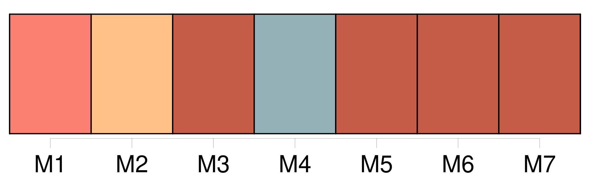
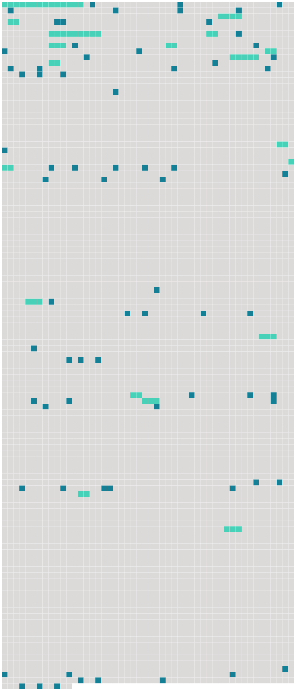

Longueur nb maillons : 89 mentions |
 |
[Un vieux chat noir, maigre, pelé comme un manchon hors d'usage] et [dont] le poil tombé laissait voir par places la peau bleuâtre, était assis sur [son] derrière aussi près du feu que cela était possible sans se griller les moustaches, et [fixait] sur la marmite [ses] prunelles vertes traversées d'une pupille en forme d'I avec un air de surveillance intéressée.
[Ses] oreilles avaient été coupées au ras de la tête et [sa] queue au ras de l'échine, ce qui [lui] donnait la mine de ces chimères japonaises qu'on place dans les cabinets parmi les autres curiosités, ou bien encore de ces animaux fantastiques à qui les sorcières, allant au sabbat, confient le soin d'écumer le chaudron où bouillent leurs philtres.
[Ce chat tout seul] , dans cette cuisine, semblait faire la soupe pour [lui -même] , et c'était sans doute [lui] [qui] avait disposé sur la table de chêne une assiette à bouquets verts et rouges, un gobelet d'étain, fourbi sans doute avec [ses] griffes tant il était rayé, et un pot de grès sur les flancs duquel se dessinaient grossièrement, en traits bleus, les armoiries du porche, de la clef de voûte et des portraits. [1 phrases]
peut-être l'esprit familier de la maison, le genius loci, le Kobold fidèle au logis adopté, et [le chat noir à l'œil si profondément mystérieux] attendait sa venue pour le servir la serviette sur la patte. La marmite bouillait toujours, et [le chat] restait immobile à [son] poste, comme une sentinelle qu'on a oublié de relever. [1 phrases]
À l'apparition du nouveau venu, [le chat noir] , [qui] semblait lié de longue date avec lui, quitta les cendres de l'âtre et [se vint] frotter amicalement contre ses jambes, arquant le dos, ouvrant et refermant [ses] griffes, en faisant sortir de [sa] gorge ce murmure enroué qui est le plus haut signe de satisfaction chez la race féline. « Bien, bien, [Béelzébuth] , dit le vieillard en se courbant pour passer à deux ou trois reprises sa main calleuse sur le dos pelé [du chat] , afin de n'être pas en reste de politesse avec un animal ; je sais que [tu] m'aimes, et nous sommes assez seuls ici, mon pauvre maître et moi, pour n'être pas insensibles aux caresses d' [une bête dénuée d'âme] , mais [qui] pourtant semble vous comprendre.
» [3 phrases]
Pierre s'assit sous le manteau de la cheminée, festonnée d'un vieux lambrequin de serge verte découpé à dents de loup et tout jauni par la fumée, sur un escabeau de bois, ayant [Béelzébuth] à côté de lui. [10 phrases] Le dos appuyé au pan intérieur de la cheminée, il avait croisé au-dessus de son genou ses grosses mains rougies de tons violacés comme des feuilles de vigne à la fin de l'automne, et faisait un pendant immobile [au chat]
[Béelzébuth] , accroupi dans la cendre, en face de lui, d'un air famélique et piteux, suivait avec une attention profonde le bouillonnement asthmatique de la marmite. [3 phrases]
» [1 phrases] [Béelzébuth] ne témoignait pas à Miraut l'antipathie que [ses] pareils professent d'ordinaire pour la gent canine. [Il] le regardait au contraire fort amicalement, en roulant [ses] prunelles vertes et en faisant le gros dos. [21 phrases] Ce mets local avec la garbure graissée par un morceau de lard dérobé, sans doute, à l'appât d'une souricière, vu son exiguïté, formait le frugal repas du Baron, qui mangeait d'un air distrait entre Miraut et [Béelzébuth] , tous deux en extase et le museau en l'air de chaque côté de sa chaise, attendant qu'il tombât sur eux quelques miettes du festin. [1 phrases]
La couenne échut [au chat noir] , [dont] la satisfaction se traduisit par des grondements sourds et une patte étendue en avant, toutes griffes dehors, comme prête à défendre sa proie. [3 phrases] [Béelzébuth] faisait ronfler [son] rouet aussi bruyamment que Berthe la filandière, et [poussait] de petits cris plaintifs pour attirer vers [lui] l'attention envolée du Baron. [3 phrases]
D'une famille jadis puissante et riche il ne restait qu'un rejeton isolé, errant comme une ombre dans ce manoir peuplé par ses aïeux ; d'une livrée nombreuse il n'existait plus qu'un seul domestique, serviteur par dévouement, qui ne pouvait être remplacé ; d'une meute de trente chiens courants il ne survivait qu'un chien unique, presque aveugle et tout gris de vieillesse, et [un chat noir] servait d'âme au logis désert. [1 phrases]
Pierre, se baissant au foyer, alluma un éclat de bois de pin enduit de résine, sorte de chandelle économique qu'emploient les pauvres paysans, et se mit à précéder le jeune seigneur ; Miraut et [Béelzébuth] se joignirent au cortège : la lueur fumeuse de la torche faisait vaciller sur les murailles de l'escalier les fresques pâlies et donnait une apparence de vie aux portraits enfumés de la salle à manger dont les yeux noirs et fixes semblaient lancer un regard de pitié douloureuse sur leur descendant. [1 phrases] [Béelzébuth] , [qui] jouissait de [ses] grandes entrées, s'installa sur un des fauteuils. [11 phrases] [Béelzébuth seul] , avec l'inquiétude naturelle aux animaux de [son] espèce, agitait à chaque bruit les racines de [ses] oreilles coupées et [regardait] fixement dans les angles obscurs, comme s' [il] y eût aperçu, de [ses] prunelles nyctalopes, quelque chose d'invisible à l'œil humain.
[Ce chat visionnaire] , au nom et à la mine diaboliques, eût alarmé un moins brave que le Baron ; car [il] avait l'air de savoir bien des choses apprises dans [ses] courses nocturnes, à travers les galetas et les chambres inhabitées du castel ; plus d'une fois [il] avait dû faire, au bout d'un corridor, des rencontres qui eussent blanchi les cheveux d'un homme. [15 phrases] Depuis quelques instants, [Béelzébuth] paraissait inquiet, [il] levait la tête comme s' [il] subodorait quelque chose d'inquiétant ; [il] se dressait contre la fenêtre et [appuyait] [ses] pattes aux carreaux, cherchant à percer le noir sombre de la nuit rayé de hachures pressées de pluie ; [son] nez se fronçait et s'agitait. Un hurlement prolongé de Miraut s'élevant au milieu du silence vint bientôt confirmer la pantomime [du chat] ; il se passait décidément quelque chose d'insolite aux environs du castel, d'ordinaire si tranquille. [10 phrases]
Le reflet de la flamme pénétrait ses phalanges amincies et les teignait d'un rouge diaphane, en sorte que, quoique ce fût la nuit et qu'il marchât suivi d' [un chat noir] au lieu de précéder le soleil, il méritait l'épithète appliquée par le bon Homère aux doigts de l'Aurore. [35 phrases] [Béelzébuth] , [qui] s'était perché sur le haut d'un buffet et [suivait] curieusement de l'œil ces préparatifs extraordinaires, tâchait de s'approprier, au moins par l'odorat, toutes ces choses exquises étalées en abondance. [Son] nez couleur de truffe aspirait profondément les émanations parfumées ; ses prunelles vertes jubilaient et scintillaient, une petite bave de convoitise argentait [son] menton.
[Il] aurait bien voulu s'approcher de la table et prendre [sa] part de cette frairie à la Gargantua si en dehors des sobriétés érémitiques de la maison ; mais la vue de tous ces nouveaux visages [l'] épouvantait et [sa] poltronnerie combattait [sa] gourmandise. |
 |
Il est possible de télécharger la ressource sur la page Ortolang |
Si vous avez des questions ou vous voyez des erreurs, merci d'envoyer un mail à silvia.federzoni89@gmail.com |